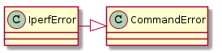
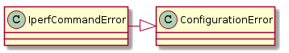
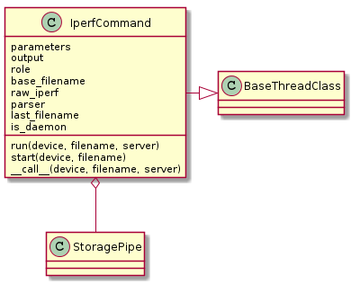

A module to hold a generic iperf command.
<class 'ImportError'>
No module named 'Queue'
The IperfError is raised if a problem with the connection between the client and server is detected.

IperfError |
<class 'NameError'>
name 'CommandError' is not defined
The IperfCommandError is raised if an error in the command-string is detected.

IperfCommandError |
<class 'NameError'>
name 'ConfigurationError' is not defined
The IperfCommand executes iperf commands. This is very old code so it is not well-documented.
The most recent change is a check for the –daemon flag in the parameters. If this is there, then it is assumed that the server will want to start, redirect the output to a file, then close the connection to the device. Another object will then have to kill the iperf process and copy it if the output is wanted. This is being implemented speciffically for the ipad running downlink iperf traffic. It probably will not work in other cases.
Because the server is running in a thread, it will set a self.last_filename property so that users will know where to get the remote file.
IperfCommand |

There are two parts to the IperfCommand.run method:
- Setup
- Traverse
The setup involves the following steps:
Add tags to the filename to make it easier to identify:
filename = self.filename(filename, device.role)Turn off the output pipeline’s screen output so the parser can do it instead:
self.output.unset_emit()Open an output file using the updated filename:
file_output = self.output(filename = filename)Wait for the connection lock (in case others have the connection) and run the command:
with device.connection.lock: output, error = device.connection.iperf(str(self.parameters))Calculate start and end times and set the current state to running:
start_time = time() abort_time = start_time + self.max_time self.running = True
self.max_time property is used so that a different value can be returned depending on whethe this is a server of client.The traversal of the output has three paths:
- The main path
- The abort (timeout) path
- The (external) stop path
The main path is a traversal of the output from the command call:
for line in ValidatingOutput(output, self.validate):
self.send_line(file_output, line)
The send_line method traps StopIteration exceptions which the would be raised when the output pipeline detects an end-of-file character.
Sometimes devices will stop generating output without quitting and so the standard-output will raise a timeout forever without reaching an end-of-file character. To prevent this from blocking a timeout is calculated which takes precedence over the end-of-file if it is reached. This is only set for the client, since the server is normally run in a thread.
The abort path is implemented as an extension of the main path (it immediately follows the send_line call):
if self.now() > abort_time:
self.send_line(end_of_file)
raise IperfError("aborting")
This is an abbreviation, the actual error-message is longer. The reason for the now method is that in the case that this is a server we do not want to actually calculate a real time.
The stop path is reached if an external agent has asked us to stop. Note that for servers if this call is made after all the output has been read then it will be stuck waiting for the next-line and will reach the stop only on the resumption of output. This is probably not the desired outcome. It would be better to kill the iperf process itself, otherwise you will have a condition where you are trying to consume all the output and then setting stop immediately between the last line read and before reaching the top of the loop again.
Experiments with sending control characters to standard-in seem to indicate that it will not kill the server. However, closing the connection will.
After the standard output traversal is completed the running state is set to False and standard-error is checked.
Warning
If the abort or stop paths were taken, there is no guarantee that the standard-error is ready to be read. This needs to be made more robust.
The code:
self.running = False
err = error.readline(timeout=1)
if len(err):
self.validate(err)
Example Use:
iperf_client = IperfCommand(client_parameters, output, IperfCommandEnum.client)
iperf_server = IperfCommand(server_parameters, output, IperfCommandEnum.server)
iperf_server.start(server_device, 'test_file')
iperf_client(client_device, 'test_file')
TestIperfCommand.test_daemon |
|
TestIperfCommand.test_is_daemon |
|
TestIperfCommand.test_set_parameters |
<class 'ImportError'>
No module named 'StringIO'